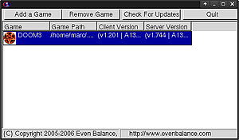

PunkBuster
Archivierte Anleitung
Dieser Artikel wurde archiviert, da er - oder Teile daraus - nur noch unter einer älteren Ubuntu-Version nutzbar ist. Diese Anleitung wird vom Wiki-Team weder auf Richtigkeit überprüft noch anderweitig gepflegt. Zusätzlich wurde der Artikel für weitere Änderungen gesperrt.
Zum Verständnis dieses Artikels sind folgende Seiten hilfreich:
PunkBuster  ist ein Anti-Cheat-Programm, welches auf dem Computer des Spielers läuft. Hier überwacht es diesen und überprüft den Arbeitsspeicher sowie Spieledateien auf der Festplatte nach Aimbots, Wallhacks und anderen Cheats. Der Server überprüft regelmäßig die verbundenen Computer, ob diese cheatfrei sind. Diese Daten werden verschlüsselt übertragen. Sofern dies nicht der Fall ist wird der Spieler aus dem Spiel ausgeschlossen. Punkbuster muss regelmäßig aktualisiert werden, damit auch neue Cheats zuverlässig erkannt werden können. Installationen mit nicht aktualisiertem Punkbuster werden deshalb von vielen Spieleservern ausgeschlossen.
ist ein Anti-Cheat-Programm, welches auf dem Computer des Spielers läuft. Hier überwacht es diesen und überprüft den Arbeitsspeicher sowie Spieledateien auf der Festplatte nach Aimbots, Wallhacks und anderen Cheats. Der Server überprüft regelmäßig die verbundenen Computer, ob diese cheatfrei sind. Diese Daten werden verschlüsselt übertragen. Sofern dies nicht der Fall ist wird der Spieler aus dem Spiel ausgeschlossen. Punkbuster muss regelmäßig aktualisiert werden, damit auch neue Cheats zuverlässig erkannt werden können. Installationen mit nicht aktualisiertem Punkbuster werden deshalb von vielen Spieleservern ausgeschlossen.
Um auf einem durch PunkBuster geschützten Server zu spielen, wird der CD-Key des Computerspiels erneut benötigt. Aus diesem wird eine Globally Unique Identifier (GUID) generiert.
Hinweis:
Welche Daten von dem Programm gesammelt, übertragen und verwertet werden ist nicht bekannt.
|  |
| © punkbuster.com |
Installation¶
PunkBuster wird bei der Installation des jeweiligen Spiels mitinstalliert. PunkBuster hält sich in der Regel, durch das integrierte Aktualisierungssystem, automatisch auf dem aktuellen Stand.
PunkBuster Player Client Files¶
Sofern diese Funktion versagen sollte kann man das Programm PBSetup verwenden. Dieses lädt man sich von der Herstellerseite die gewünschte Version herunter. Zur Auswahl stehen Versionen mit grafischer Oberfläche und das Terminal für 32-Bit- sowie 64-Bit-Systeme. Die gewünschte Datei entpackt [4] man und macht pbsetup.run anschließend ausführbar [3].
Bedienung¶
Anschließend ruft man mit den entsprechenden Rechten [2] die Datei auf [1]:
sudo ./pbsetup.run
GUI¶
| PunkBuster | |
| Menüpunkt | Kurzbeschreibung |
| "Add a Game" | Spiele aus der Dropdown-Liste hinzufügen - alternativ Spieleverzeichnis angeben. |
| "Remove Game" | Spiel aus Liste entfernen. |
| "Check for Updates" | Auf aktuelle Version überprüfen. |
| "Quit" | Programm beenden. |
Terminal¶
PunkBuster kann auch über das Terminal [1] [2] genutzt werden:
sudo ./pbsetup.run --add-game=doom3 --add-game-path=/usr/local/games/doom3/
| Terminal | |
| Parameter | Beschreibung |
--help | Hilfe anzeigen - hier werden alle möglichen Parameter erläutert.. |
--i-accept-the-pb-eula | Dem Endbenutzer-Lizenzvertrag zustimmen. |
--eula | Endbenutzer-Lizenzvertrag anzeigen. |
--add-game-path=PFAD | Spiel hinzufügen - Installationspfad angeben. |
--list-abbreviations | Abkürzungen und Anzeige der unterstützten Spiele. |
--add-game=doom3 | Spiel mittels Abkürzung hinzufügen. |
--update | Überprüfen und durchführen von Aktuallisierungen. |
Die Parameter können kombiniert genutzt werden. Die Hilfe gibt detaillierte Auskunft.
Spieleverzeichnisse¶
| Spieleverzeichnisse | |
| Spiel | Pfad |
| Doom3 | ~/.doom3 |
| Enemy Territory - Quake Wars | ~/.etqwcl |
| Quake 4 | ~/.quake4 |
| Wolfenstein - Enemy Territory | ~/.etwolf |
Links¶

Hinweis:
PunkBuster und das PunkBuster-Logo sind Warenzeichen von Even Balance, Inc. in den USA und / oder anderen Ländern. Alle anderen Marken sind das Eigentum ihrer jeweiligen Besitzer.
- Erstellt mit Inyoka
-
 2004 – 2017 ubuntuusers.de • Einige Rechte vorbehalten
2004 – 2017 ubuntuusers.de • Einige Rechte vorbehalten
Lizenz • Kontakt • Datenschutz • Impressum • Serverstatus -
Serverhousing gespendet von